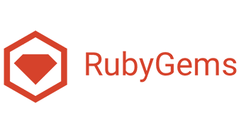

Ruby es un lenguaje orientado a objetos en el que todos los tipos de datos son objetos (no existen los datos primitivos) y las funciones son métodos. Ruby soporta herencia con enlace dinámico, mixins y métodos singleton (pertenecientes y definidos por una sola instancia más que definidos por la clase). A pesar de que Ruby no soporta herencia múltiple, la clases pueden importar módulos como mixins. Es compatible con la sintaxis procedimental, pero todos los métodos definidos fuera del ámbito de un objeto son realmente métodos de la clase Object. Como esta clase es padre de todas las demás, los cambios son visibles para todas las clases y objetos.
Ruby es considerado un lenguaje multiparadigma que permite programación orientada a objetos y con aspectos de programación funcional como pueden ser las continuaciones o las clausuras. Soporta introspección, reflexión y metaprogramación, además de soporte para hilos de ejecución gestionados por el intérprete. Ruby tiene tipado dinámico, y soporta polimorfismo de tipos.
Podríamos entonces resumir las principales características en forma de lista de la siguiente forma:
Lenguaje multiparadigma que acoje multitud de características de diferentes paradigmas como pueden ser:
Además de estas características comunes a diferentes lenguajes también disponemos de unas características un poco más personales de lenguaje
Su sistema de empaquetado "RubyGems" facilita la distribución, actualización e instalacion de bibliotecas en el sistema de forma sencilla. Para más información visite la página oficial de RubyGems
Es un lenguaje de alto nivel, lo que significa que estálejos del lenguaje máquina y más cerca del ingles, esto facilita ampliamente la programación utilizando Ruby.
Ruby es un lenguaje dinámico, los programas en Ruby no se compilan sino que se interpretan en tiempo de ejecución por un interprete.